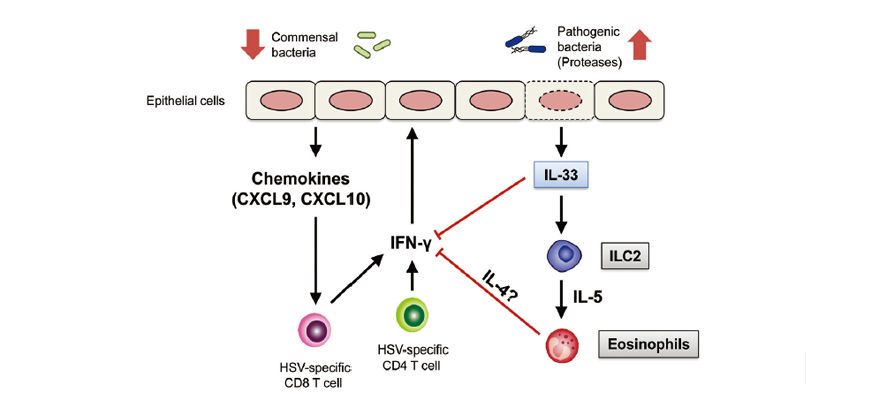

Report by Subjects
Report by Subjects
KAIST RESEARCH ACHIEVEMENTS
An immunological mechanism for the contribution of commensal microbiota against herpes simplex virus infection in genital mucosa
Graduate School of Medical Science and Engineering
Heung Kyu Lee
Summary
In 2030, Iris Kim, who often takes antibiotics to treat respiratory bacterial infection is hospitalized for symptoms of genital herpes infection. She is tested to determine whether imbalances in her vaginal microflora, triggered by the antibiotic treatments, have impaired her immune system. The composition of her vaginal bacterial community shows a notable rise in gram-negative proteobacteria, to the detriment of Lactobacillus. Iris is then given medication to repopulate her vaginal bacterial community with Lactobacillus species, allowing her genital herpes to clear up without having to take antiviral drugs.
R&D Report
In this study, we present data demonstrating that the imbalance between beneficial commensal bacteria and harmful bacteria in the vaginal mucosa results in severe impairment of antiviral protection against herpes simplex virus 2 (HSV-2) infection. Dysbiosis within the vaginal microbiota as a result of oral antibiotic treatment leads to a dramatic increase in IL-33, an alarmin cytokine involved in type 2 immune responses. IL-33, in turn, blocks the ability of effector T cells to migrate into the vaginal tissue and secrete the antiviral cytokine IFN-γ, thereby rendering the host susceptible to lethal infection by HSV-2.
Commensal bacteria support various immunologic functions, including the development of lymphoid tissues and maintenance of intestinal immune homeostasis through the regulation of Treg and Th17 differentiation. Recently, the roles of intestinal commensal bacteria in immune protection against infection by viruses, such as mucosal influenza virus and systemic LCMV, have been reported. However, whether and how commensal bacteria might influence the effector arm of immune responses is unknown. Moreover, almost nothing is known about the role of microbiota in immune responses within the female reproductive tract. For these reasons, we investigated a previously unstudied role of commensal bacteria in the effector phase of the antiviral immune response using a physiologically relevant model of genital herpes in mice.
Research Results
Our study revealed that the depletion of commensal bacteria by oral antibiotics induces the outgrowth of pathogenic bacteria in the vagina. We found that, following dysbiosis caused by oral antibiotic treatment, IL-33, an alarmin released from damaged cells, is robustly secreted by the vaginal epithelia. We show that this cytokine suppresses antiviral immunity against mucosal HSV-2 infection by rendering the effector T cells incapable of secreting the key antiviral cytokine IFN-γ within the vaginal tissue. Notably, antibiotic treatment did not affect the ability of the animals to induce primary immune responses in the draining lymph nodes, but rather, specifically affected the ability of effector T cells to migrate into the vaginal tissue and secrete IFN-γ. Taken together, these results reveal a unique insight into the role of commensal bacteria in maintaining the integrity of the surface barrier epithelial cells by preventing pathogenic bacteria colonization, thereby supporting a microenvironment conducive to antiviral defense. The influence of microbiota on viral infections could be either protective or detrimental for the host. Here, we found that dysbiosis caused by oral antibiotic treatment impairs antiviral immunity following vaginal mucosal viral infection through the release of IL-33, an alarmin released in response to tissue damage. These findings provide insight into the mechanisms of homeostasis maintained by commensal bacteria and reveal a deleterious consequence of dysbiosis in antiviral immune defense. These results also prompt clinically relevant questions on the use of oral antibiotics in relation to patients’ susceptibility to various sexually transmitted viruses. We believe that this study will catalyze further investigation into the role of vaginal microbiota in health and disease.
 Figure 1. An immunological mechanism for the contribution of commensal microbiota against herpes simplex virus infection in genital muscosa
Research Funding
This work was supported by KAIST’S HRHR project, the National Research Foundation (NRF-2014M3A9A5044964, NRF-2013R1A1A2063347, NRF- 2012R1A1A2046001, and NRF-2012M3A9B4028274), the Converging Research Center Program (2011K000864), and the KAIST Future Systems Healthcare Project, which is funded by the Ministry of Science, ICT and Future Planning of the Republic of Korea . This study was also supported by the Korean Health Technology R&D Project (A100920), which is funded by the Ministry of Health and Welfare of the Republic of Korea.
Research Outcomes
Dysbiosis-induced IL-33 contributes to impaired antiviral immunity in the genital mucosa, Proc Natl Acad Sci U.S.A., 2016 Feb 9; 113(6): E762-71.